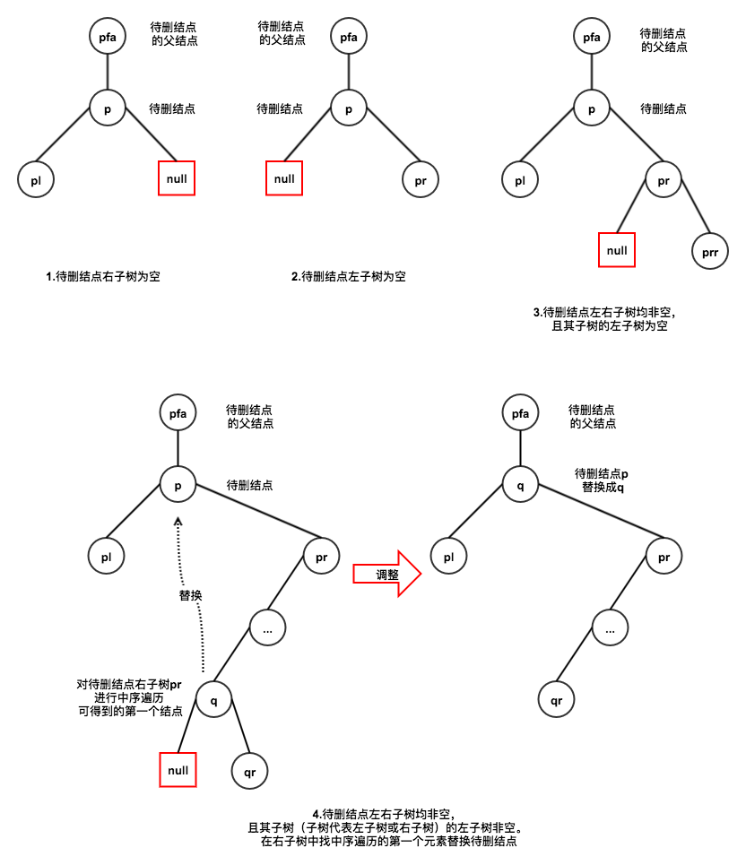

二叉排序树
二叉排序树（BST），也称为二叉查找树。它可以是一棵空树，或者是有如下性质的非空二叉树
- 若左子树非空，则左子树上的所有结点 key 均小于根结点 key
- 若右子树非空，则右子树上的所有结点 key 均大于根结点 key
- 左右子树本身也是一棵二叉排序树
另外，需要注意的是：对二叉树进行中序遍历可以得到一个升序序列
1 删除操作
删除操作分为4种情况
注：图中 pfa 和 p 结点间的竖线表示 p 可能是 pfa 的左孩子，也可能是右孩子

2 基本操作
#define elem_type int typedef struct node { int data; struct node *lchild; struct node *rchild; }node, *BiTree; // 查找关键字为 key 的结点 BiTree search(BiTree T, elem_type key, node *&p) { p = NULL; // p 指向被查找结点的父结点，用于插入和删除操作中 while(T && T->data != key) { p = T; if(key < T->data) T = T->lchild; else T = T->rchild; } return T; } // 插入关键字为 key 的结点 bool insert(BiTree &T, elem_type key) { node *pfa = NULL; // 要插入结点的父结点 if(NULL != search(T, key, pfa)) // 二叉排序树已存在该元素，就返回false return false; node *q = (BiTree)malloc(sizeof(node)); q->data = key; q->lchild = q->rchild = NULL; if(!T) // 处理二叉排序树为空的情况 T = q; else if(key > pfa->data) pfa->rchild = q; else pfa->lchild = q; return true; } // 二叉排序树中删除关键字为 key 的结点 void del(BiTree &T, elem_type key) { node *pfa = NULL; // 要插入结点的父结点 node *p = search(T, key, pfa); if(!p) // 如果不存在要删除的结点 return; // 待删结点左子树为空 if(p->lchild == NULL) { if(key > pfa->data) pfa->rchild = p->rchild; else pfa->lchild = p->rchild; free(p); } // 待删结点右子树为空 else if(p->rchild == NULL) { if(key > pfa->data) pfa->rchild = p->lchild; else pfa->lchild = p->lchild; free(p); } // 待删结点左右子树均非空，且其子树的左子树为空 else if(p->rchild->lchild == NULL) { node *q = p->rchild; q->lchild = p->lchild; if(key > pfa->data) pfa->rchild = q; else pfa->lchild = q; free(p); } // 待删结点左右子树均非空，且其子树的左子树非空。在右子树中找中序遍历的第一个元素替换 else { // q 指向待删结点的右子树上中序遍历的第一个元素 // preq 指向 q 的父结点 node *q = p->rchild; node *preq = p->rchild; while(q->lchild) { preq = q; q = q->lchild; } preq->lchild = q->rchild; q->lchild = p->lchild; q->rchild = p->rchild; if(key > pfa->data) pfa->rchild = q; else pfa->lchild = q; free(p); } } // 构造二叉排序树 bool init(BiTree &T, elem_type keys[], int n) { if(T) return false; for(int i = 0; i < n; ++i) insert(T, keys[i]); return true; }